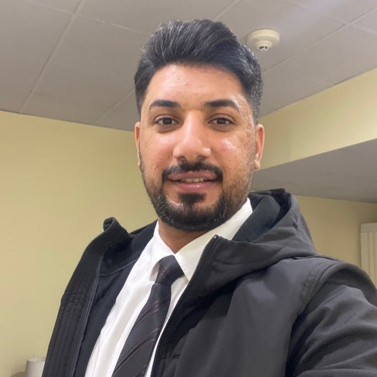

أقدم جلسات نفسية حضورية وأونلاين، في بيئة هادئة ومحترمة تساعدك على فهم مشكلتك والعمل على تحسينها.

معلومات مختصرة
خيارات الجلسات المتاحة
جلسات مخصصة لمناقشة الصعوبات النفسية ووضع خطة مناسبة للحالة.
جلسات عن بُعد عبر WhatsApp.
جلسات حضورية في اماكن عامة مثل الياقوت او فودلان. او الوردة المثنى.
أوقات الدوام: 4 مساءً إلى 11 مساءً
الحضوري: 25,000 د.ع · الأونلاين: 25,000 د.ع
تواصل عبر WhatsApp07811627604